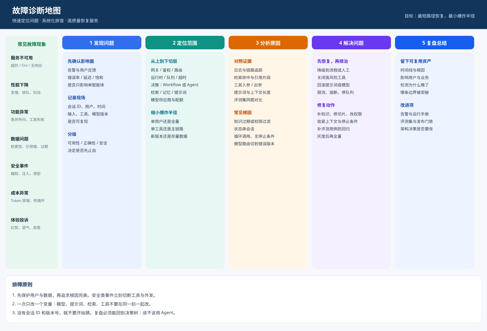
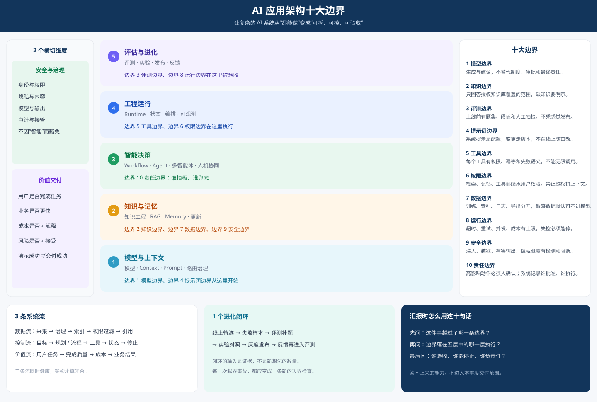

最上面是业务价值：用户满意、任务完成、业务增长。箭头向下写成“价值交付”，意思是下面每一层都要为这三个结果服务，而不是为技术完整度服务。
中间五层自下而上是能力栈：模型与上下文决定“能做什么”，知识与记忆决定“知道并记住什么”，智能决策决定“如何完成任务”，工程运行决定“能不能稳定跑”，迭代进化决定“会不会越来越好”。
工作汇报 · 2026年10月
这套材料回答的不是“模型能不能聊天”，而是企业里的智能体如何被设计成可交付、可治理、可排障、可进化的系统。建议汇报时始终抓住一句主线：五层往上交付价值，两侧横切约束风险，三条流把系统跑起来，十条边界划清责任，一棵决策树决定技术路径。
对应原图中的业务价值架构。适合开场 60–90 秒，让听众先看到价值从哪来。

最上面是业务价值：用户满意、任务完成、业务增长。箭头向下写成“价值交付”，意思是下面每一层都要为这三个结果服务，而不是为技术完整度服务。
中间五层自下而上是能力栈：模型与上下文决定“能做什么”，知识与记忆决定“知道并记住什么”，智能决策决定“如何完成任务”，工程运行决定“能不能稳定跑”，迭代进化决定“会不会越来越好”。
我们不把 Agent 理解成一个对话框。它是一条向上的价值链：底层提供能力，中层完成任务，顶层用评估、实验、发布和反馈保证系统会变好。左边的安全合规贯穿全程，右边只用业务结果验收。底下一根数据供给链和一条进化闭环，保证明天的系统比今天更可靠。
这是汇报的主体。用 3 分钟把“5 + 2 + 3 + 1”讲完，听众就能跟上后面的边界和决策树。

评估与进化层回答“怎样证明它变好了”：自动评测、人工抽检、业务指标、A/B 与灰度、可回滚的发布、失败样本回流。工程运行层回答“怎样稳定跑”：Agent Runtime 与 Workflow Runtime、会话和任务状态、工具编排、日志指标链路和告警。智能决策层回答“任务怎么做完”：固定流程、单智能体规划、多智能体分工，以及必须保留的人机确认。知识与记忆层回答“依据是什么”：解析切片、带权限的检索、短期与长期记忆、索引更新与失效。模型与上下文层回答“这次调用装进了什么”：模型路由、窗口与摘要、提示词模板、安全过滤和成本配额。
安全与治理、价值交付如果单独做一层，团队会以为做完一层就结束了。它们必须出现在每一次检索、每一次工具调用和每一次发布里。身份、权限、隐私、内容、审计、人工接管是安全横切；用户是否完成任务、时效、成本、转化是价值横切。汇报时可以明确说：安全不是评审会上的附录，价值也不是上线后的感觉。
数据流保证知识来得干净、权责清楚。控制流保证从目标到停止条件是可追踪的。价值流保证优化指标和业务结果对齐。进化闭环把线上轨迹收成评测题，再进入实验和发布。四者缺一，系统就会停在“能演示”。
这张图用于说明架构不是画完就结束。它把排障从个人经验变成五步动作。

发现问题：先看影响面和分级，安全事件立即切断工具与外发。定位范围：从网关、鉴权、运行时、决策、检索记忆到模型供应商逐层切开，避免全员同时猜。分析原因：用会话 ID、版本、检索片段、工具入参出参对照，一次只怀疑一个变量。解决问题：先降级、回滚、限流，再补知识、收紧停止条件、补评测。复盘总结：写清哪条边界被突破，并决定决策树要不要改。
Agent 故障和普通接口故障不一样，它可能“看起来成功、业务上是错的”。所以诊断地图把正确性、权限、成本和幻觉放进同一套分级。没有会话编号和模型版本，我们不开始分析。恢复动作优先于漂亮的根因故事，根因必须能变成下一次的发布门禁。
当讨论跑偏到功能清单时，用这张图把话题拉回责任。每一条边界都对应五层中的执行位置。

十条边界可以收成三句追问。第一，这件事越过了哪一条边界：是模型在替人做决定，是知识超出授权范围，是工具没有失败语义，还是高影响动作没有人确认。第二，这条边界在五层的哪一层执行：提示词版本在模型层，权限过滤在知识层，停止和预算在运行层，验收阈值在进化层。第三，谁验收、谁能停止、谁负责任。答不上来的能力，不放进本季度交付。
特别需要强调责任边界和数据边界。生成内容可以辅助起草，不能替代制度、审批和最终签字。训练数据、索引、日志和导出必须分开；敏感内容默认可以不进模型。运行边界则要求超时、重试、并发和成本有上限，系统失控时必须存在一个能按下的停止开关。
这张图用来挡住“一律上多智能体”。路径可以叠加，但不能跳过更简单的方案。

决策树不是六选一。一个场景可以同时需要流程、检索和运行时。它禁止的是跳步：还没证明流程不够，就上多智能体；还没划清数据和权限，就让模型直接调用写接口。若动作不可逆，再灵活的路径也退回“流程 + 人工确认”。最终交付物不是一张概念图，而是一张场景架构卡：目标、路径、边界、运行责任人和验收指标。
架构设计的完成标准不是图的层数，而是四个问题都有负责人：用户任务是否被完成，依据是否来自授权知识，高风险动作是否有人确认，系统变差时是否能在一条闭环里被发现并回滚。五张图是同一套口径的五个切面，后续评审、排期和故障复盘都沿用这套词，避免每个项目重新发明一层架构。